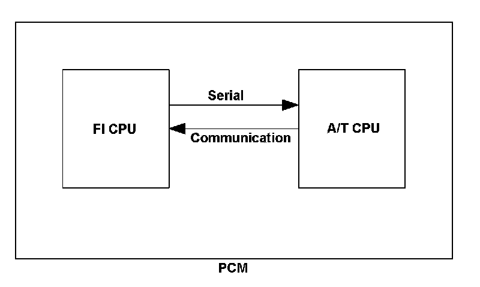
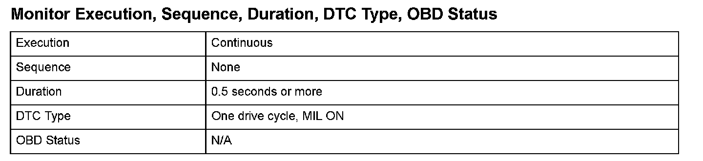
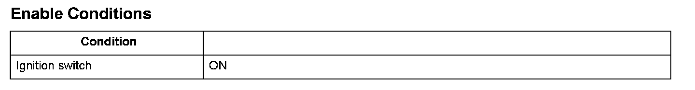

Advanced Diagnostics
DTC U0300: PGM-FI System and A/T System Program Version Mismatch
General Description
A serial communication data version check of the communication data set is performed during the serial communication that takes place between the FI CPU and the A/T CPU.
When the rewriting of the FI CPU or the A/T CPU is done at the powertrain control module (PCM), and when different data of the serial communication data version is rewritten, a malfunction is detected and a DTC is stored.

Monitor Execution, Sequence, Duration, DTC Type, OBD Status

Enable Conditions
Malfunction Threshold
The rewriting of the FI CPU or the A/T CPU is done at the PCM, and different data of the serial communication data version is rewritten.
Diagnosis Details
Conditions for illuminating the MIL
When a malfunction is detected, the MIL comes on and the DTC and the freeze frame data are stored in the PCM memory.
Conditions for clearing the MIL
The MIL will be cleared if the malfunction does not recur during three consecutive trips in which the diagnostic runs.
The MIL, the DTC, and the freeze frame data can be cleared by using the scan tool Clear command or by disconnecting the battery.